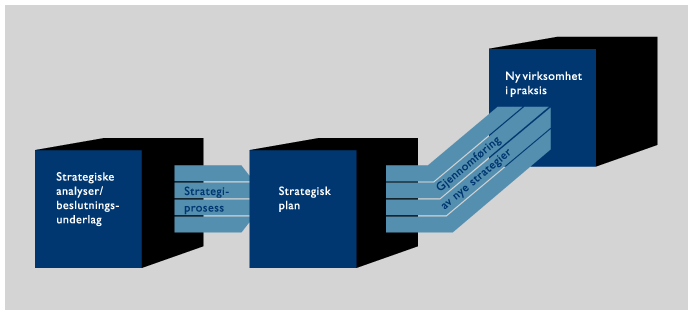

Enhver utviklingsprosess tar utgangspunkt i å realisere bedriftens
strategiske mål. For å klargjøre disse bidrar Indevo til en
prosess som har som mål å samle ledergruppen omkring de
viktigste overordnede strategiene.

Det er vår oppfatning at det må
legges vekt både på innholdet i de valgte strategiene og også
arbeidsprosessen i ledergruppen som fører frem til strategivalget.
Strategiene må være forankret i ledergruppen og avstemt med styret.